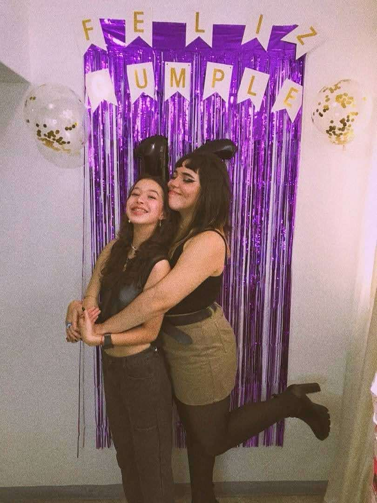

Aunque no estés en Caracas ni yo en Valencia, este es mi intento de estar cerca y estar presente, sabes lo mucho que te amo y te extraño, pero a su vez sabes que esto no es todo lo que hay y que un día celebraremos nuestros cumpleaños juntas como siempre hemos querido.

Gracias por dejarme estar en tu vida desde ese mensaje random de facebook hasta hoy, van 5 años ya y no cambiaría ni una cosa.
Te amo por siempre, lots of hugs and kisses (ojalá no me los retengan en migración)
La distancia aproximada entre Caracas, Venezuela y Valencia, España es de 7,100 km but always in my heart.